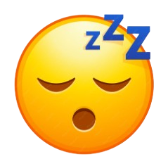

1. Problema
O espaço é hostil à mente humana.
Missões longas expõem astronautas a condições extremas que comprometem saúde mental e desempenho.

Fadiga Cognitiva
Queda progressiva no raciocínio e tempo de reação.

Privação de Sono
Ciclos interrompidos afetam memória e foco.
Isolamento Social
Continuamento causa estresse psicológico severo.

Risco Operacional
Falha humana causada por exaustão mental.
85%
dos astronautas têm sintomas de ansiedade
43%
desenvolvem sintomas de depressão
4 de 6
astronautas apresentaram problemas psicológicos
Fontes: NASA/ Translation Psychiatry.2023 Experimento Mars50.
E futuras missões para Marte e Lua, esses desafios tendem a se intensificar ainda mais.